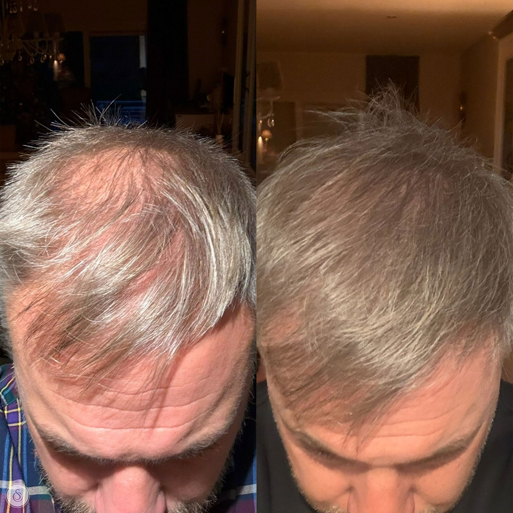
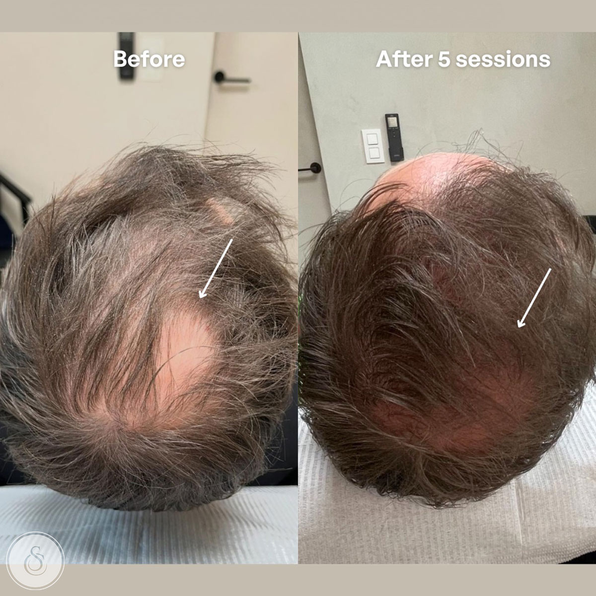
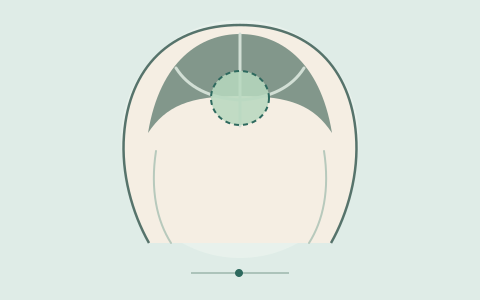
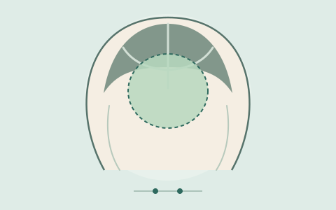
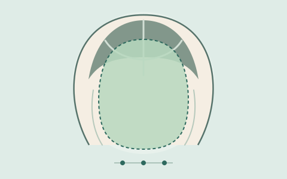

Analyse & advies
We bekijken de hoofdhuid, je haarverlies en je doelen. Samen kiezen we de zones en een passend protocol.
HAAR & HOOFDHUID · SARASIN CLINIC
Haarverlies kan iedereen treffen. Hairfiller is een injecteerbare behandeling met hyaluronzuur en peptiden. Tijdens een persoonlijk consult bekijken we wat bij jouw hoofdhuid en situatie past.
We bespreken tijdens het consult of deze behandeling bij jou past.

01 / DE BEHANDELING
Haarverlies kent verschillende oorzaken. Daarom begint een goed traject niet met een belofte, maar met een gesprek en een analyse van je hoofdhuid.
Bij Hairfiller brengen we een peptide-hyaluronzuurformule met fijne injecties aan in de gekozen zones. De behandeling is bedoeld om de conditie van de hoofdhuid en de omgeving van de haarfollikels te ondersteunen. Het resultaat verschilt per persoon.
Bespreek jouw mogelijkheden ↗
VOOR WIE?
Hairfiller kan een optie zijn voor mensen van verschillende leeftijden en genders, bij dunner wordend haar, diffuus haarverlies of een wens om de hoofdhuid gericht te ondersteunen.
Bij plots, pleksgewijs haarverlies, pijn, ontsteking of littekenvorming is eerst een medische beoordeling belangrijk.
Laat je adviseren02 / ZO WERKT HET
Je weet vooraf wat er gebeurt, hoeveel sessies passen bij jouw situatie en wanneer we samen evalueren.
We bekijken de hoofdhuid, je haarverlies en je doelen. Samen kiezen we de zones en een passend protocol.
Na het ontsmetten brengen we kleine hoeveelheden Hairfiller met een fijne naald aan. Een sessie duurt ongeveer 15 minuten.
Een startkuur omvat vaak vier sessies, doorgaans met ongeveer twee weken ertussen. Onderhoud bespreken we individueel.
03 / RESULTATEN
Verandering in haarkwaliteit kost tijd. Eerste zichtbare veranderingen kunnen na enkele weken optreden; evaluatie gebeurt vaak rond drie maanden. Jouw uitgangssituatie en behandelplan bepalen wat haalbaar is.
Bekijk meer echte patiëntbeelden ↗
04 / PRAKTISCH
De hoeveelheid hangt af van de zones die we samen kiezen. Zo kun je de drie tarieven vergelijken; tijdens het consult bepalen we jouw behandelplan.

Kan passen bij één compacte plek waar je haar dunner wordt, bijvoorbeeld een deel van de haarlijn of kruin.
Per sessie: 1 ml Hairfiller in de gekozen zone

Voor een ruimer gebied of meerdere plekken die aandacht vragen. De verdeling van de 2 ml stemmen we af op jouw haarverlies.
Per sessie: 2 ml Hairfiller verdeeld over de gekozen zones

Wanneer een groter deel van de hoofdhuid ondersteuning vraagt. We bepalen samen welke gebieden prioriteit krijgen.
Per sessie: 3 ml Hairfiller verdeeld volgens jouw plan
De illustraties tonen mogelijke omvang, geen gegarandeerde dekking of resultaat. De exacte zones, benodigde hoeveelheid en het aantal sessies bepalen we na een hoofdhuidanalyse. Controleer het actuele tarief bij het boeken.
05 / VOOR & NA
De belangrijkste richtlijnen op één plek. Je behandelaar geeft persoonlijk advies als jouw situatie daarom vraagt.
Een startkuur bestaat doorgaans uit vier behandelingen. Of en wanneer onderhoud zinvol is, bepalen we op basis van je reactie en doelen.
De formule combineert hyaluronzuur met zeven peptiden: Decapeptide-10 en -18 en -28, Octapeptide-11 en -2, en Oligopeptide-54 en -71. De precieze werking en geschiktheid bespreken we tijdens het consult.
KIJK MEE
Een duidelijke uitleg en een kijkje in het traject. Kies een video om die af te spelen.
DE SARASIN 360° VISIE
Een behandeling is één onderdeel van je routine. We kijken ook naar dagelijkse verzorging, voeding en leefstijl. Zo sluiten advies in de clinic en producten voor thuis beter op elkaar aan.
Supplementen vervangen geen diagnose of behandeling. Bespreek haarverlies met een professional.Gegenereerde sfeerbeelden ter illustratie.
GOED OM TE WETEN

Meer weten? Tijdens een consult krijg je advies dat aansluit op jouw hoofdhuid en gezondheid.
De prikjes kunnen gevoelig zijn, maar worden meestal goed verdragen. De hoofdhuid kan daarna tijdelijk gevoelig of rood zijn.
Een startkuur telt doorgaans vier sessies. Tijdens het consult bespreken we de zones, hoeveelheid en het interval dat bij jou past.
De richtlijn is: wassen na 24 uur en kleuren na 7 dagen. Volg altijd je persoonlijke nazorginstructies.
Ja. REYU Hair is een naaldvrije optie. PRP en een haartransplantatie zijn andere trajecten die bij bepaalde vormen van haarverlies overwogen worden. Een consult helpt de mogelijkheden te vergelijken.
Milde haarverzorging, voldoende voeding, het vermijden van grote hitte en aandacht voor stress kunnen onderdeel zijn van een bredere aanpak. Laat mogelijke tekorten of medische oorzaken beoordelen; supplementen zijn geen vervanging voor een diagnose.
Een consult bij de clinic kan een eerste stap zijn. Bij plots, pleksgewijs haarverlies, ontsteking, pijn of littekens is medische beoordeling aangewezen.